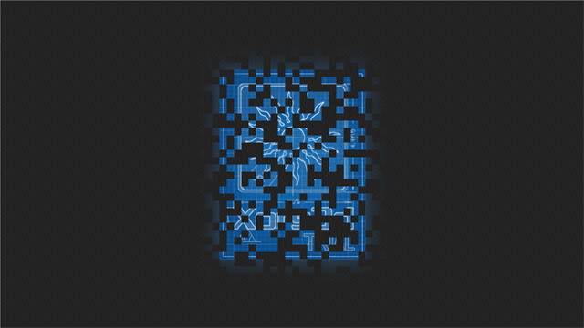
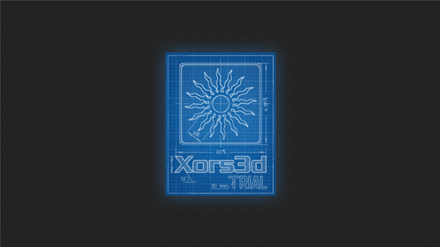
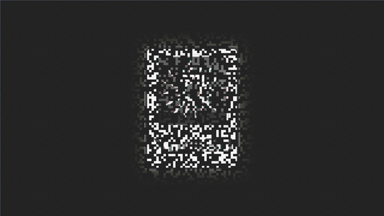
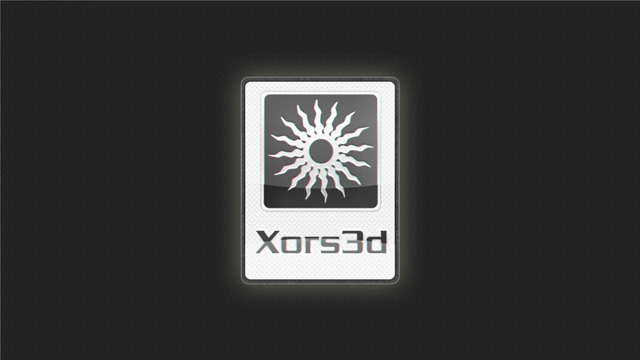

Since version 1.15.750 the spash screen is displayed when xGraphics3d() function is called.
There are two modes of the splash screen: trial and indie. To use the indie mode you should have a proper license key.
- In the trial mode the splash screen looks as follows:

One frame of the splash screen animation in the trial mode

The splash screen in the trial mode
- In the indie mode the splash screen looks as follows:

One frame of the splash screen animation in the indie mode

The splash screen in the indie mode
- The splash screen consists of two parts: the background and the logo.
The background is a tiling texture. Its scale doesn't depand on the window dimensions.
The logo is a 448x544 texture which is always centered in the window. If the window is greater than the logo (e.g. 1024x768) the logo is displayed at 100%. If the window is smaller than the logo (e.g. 320x240 or 320x640) the logo is scaled down to fit the window.
- By default the splash screen is shown during 3 seconds: 2.0 seconds of the tiling animation and 1.0 seconds after that. These values are recommended to be used in the indie mode too.
Nevertheless, in the indie mode you can change the duration of display and the size of the tile. See Splash::TileSize, Splash::TilingTime and Splash::AfterTilingTime.
There is no way to change these parameters in the trial mode.
Use zero durations to disable splash screen display.
 1.7.4
1.7.4